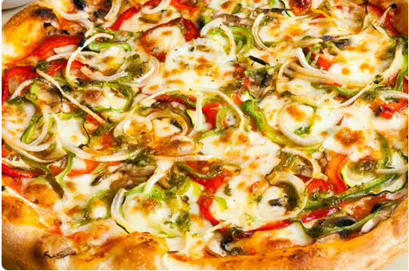

pizza
Ingredients
2 cup all purpose flour
100 ml tomato ketchup
1 tomato
2 onion
1 teaspoon chilli flakes
1 teaspoon baking powder
1 teaspoon sugar
100 gm processed cheesec
4 mushroom
1/2 capsicum (green pepper)
1 teaspoon oregano
1/2 cup mozzarella
1 tablespoon dry yeast
water as required
Steps
Stir together the tomato paste, Italian seasoning, onion powder, minced garlic, black pepper, olive oil, water, honey (or brown sugar), and salt to taste and set aside.
Combine the yeast, sugar, and warm water in a large bowl and leave it to sit for about 5 to 10 minutes until the yeast is dissolved and foamy, then stir in the olive oil and salt.
Add the flour and mix it until all the ingredients are well combined, then transfer it to a work surface and knead until the dough is smooth and elastic.
Form the dough into a ball and place it in a bowl that has been coated with olive oil. Turn it over to coat it evenly, then cover it with plastic wrap or a damp kitchen towel. Let it rise for an hour or until it doubles in size.
Punch down the dough to remove the trapped air, then transfer it back to a lightly floured work surface and divide the dough into 2 equal parts.
Use your hand to push the dough from the center and then maintain a circular shape. You can use a rolling pin if you find this hard to do.
Dust the pizza pan with some cornmeal, place the flattened out dough on the pan, and continue to push the dough until it reaches the size of your pan, making sure you create a lip around the edge for the crust. Now leave this to rest for about 5 minutes before adding the toppings.
Brush the dough with some olive oil, concentrating more on the edges. This will help to achieve the golden-brown crust.
Spread the sauce on the pizza, add the cheese (I used a combination of Mozzarella and provolone cheese) and your favorite toppings, then bake in a 450 and bake for 10 to 12 minutes rotating halfway between.